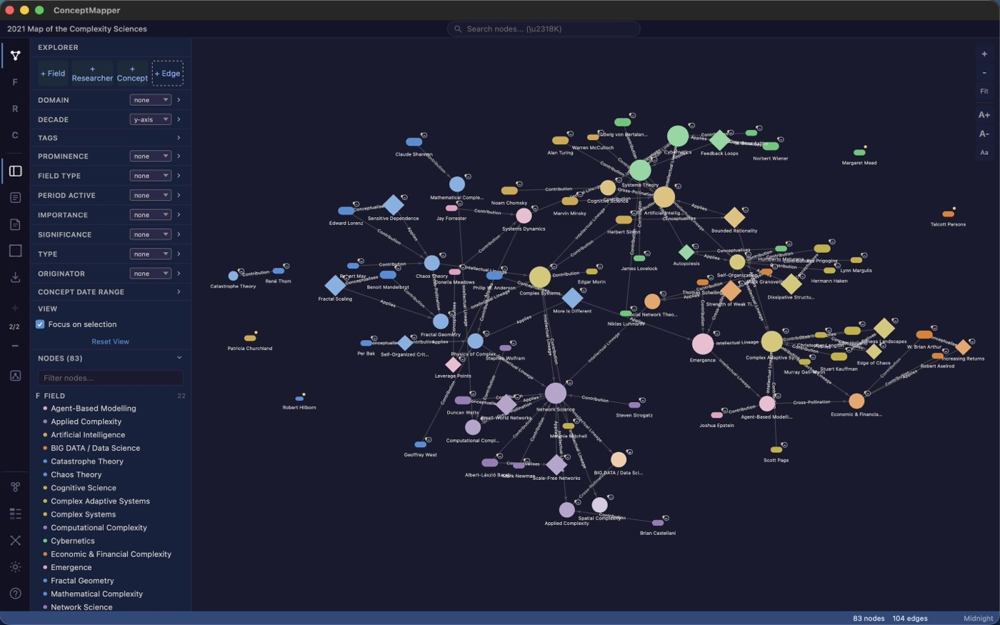
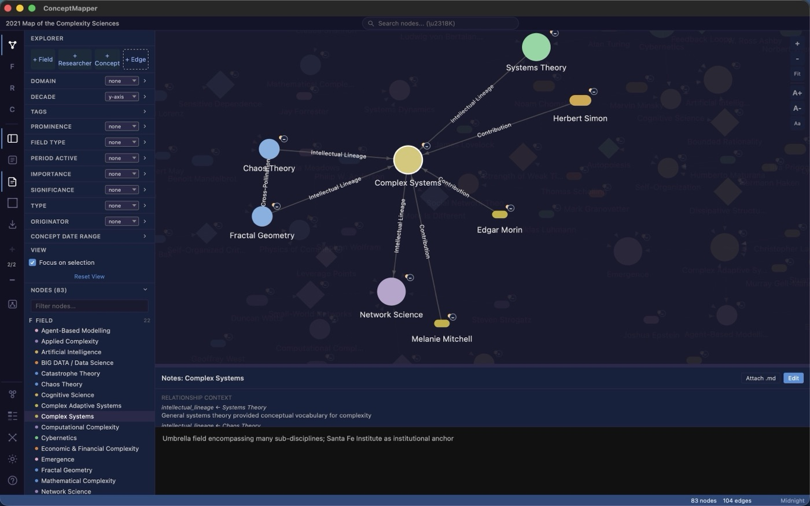
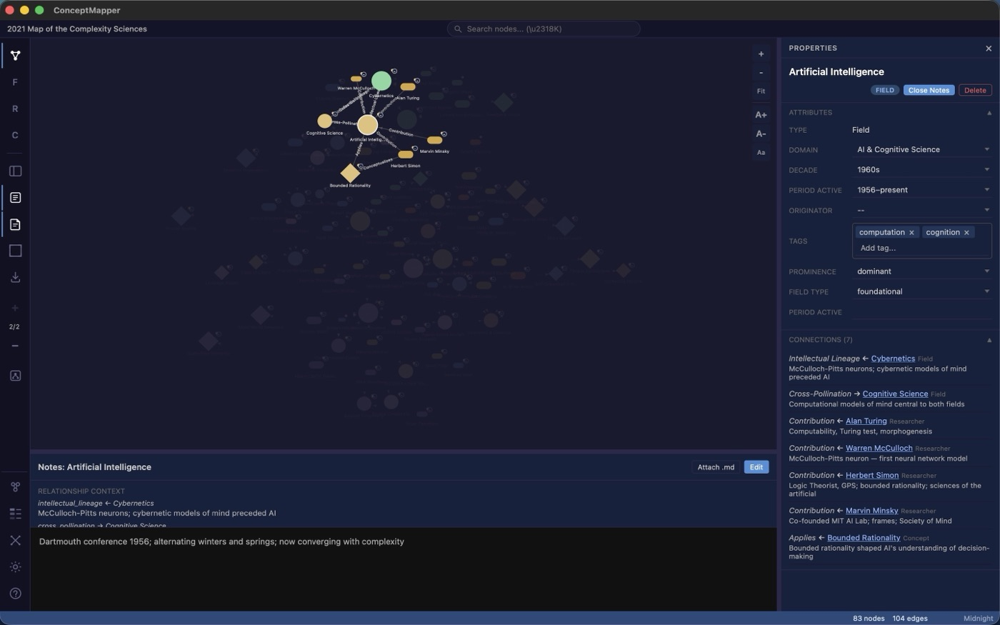
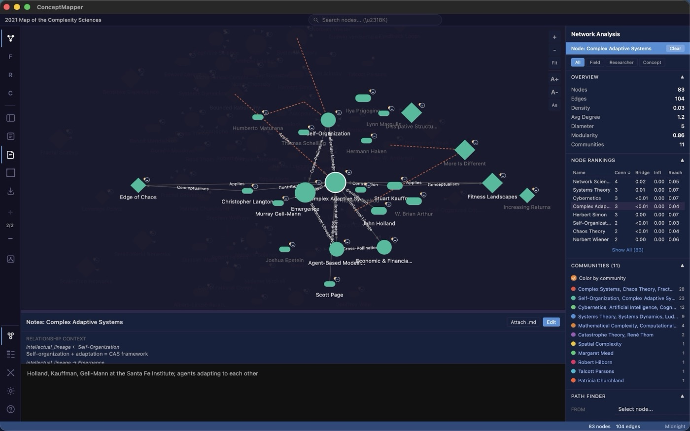
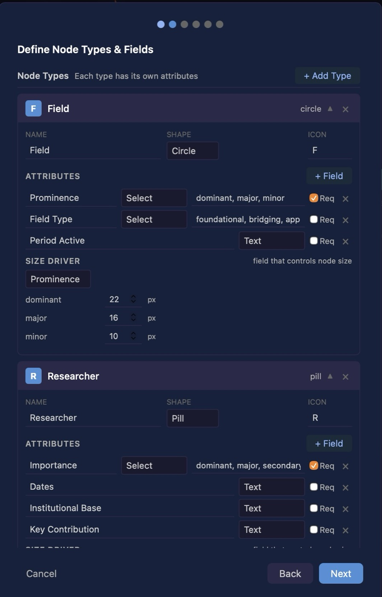
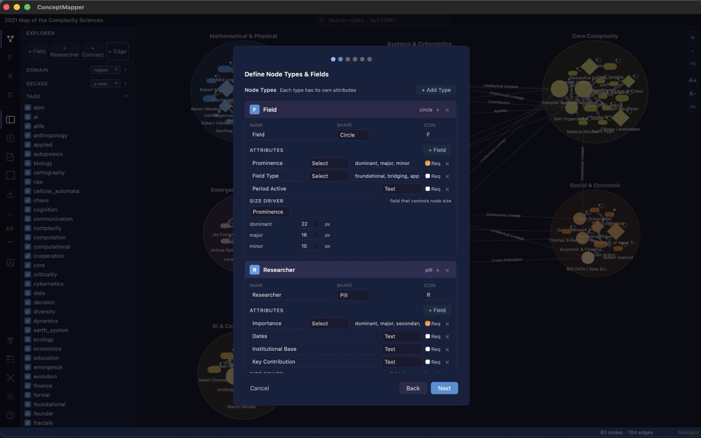

Think in typed graphs.
Concept Mapper is a tool for building, editing, and reasoning over concept maps where every node and edge has a type. Maps are plain-text Markdown; the schema they obey lives in a separate template. Your thinking stays portable, greppable, and yours.

Focus
Follow a single thread
Select any node and the canvas concentrates on it and its neighbours, dimming the rest. Edges carry their relationship type — intellectual lineage, contribution — as labels, and the notes pane gathers the relationship context for the selected idea in one place.

Structure
Every node is real data, not a label
Behind each node is a typed record: classifier dropdowns, free-text fields, and tags with autocomplete drawn from the rest of the map. The Properties panel lists every connection by type and direction, so you can read a node's place in the network without hunting across the canvas.

Analysis
Graph theory, built in
Density, average degree, diameter, modularity. Per-node degree, betweenness (bridge), eigenvector (influence), and closeness (reach). Community detection you can paint onto the canvas, and a path finder that surfaces the single weakest link between any two ideas — the structure you cannot see by looking, made measurable.

Your schema
Design the taxonomy; the map follows
Nothing is hardcoded. Define your own node types, give each a shape, icon, and field set, and choose which field drives node size. The taxonomy lives in a separate JSON template — the single source of structural truth — so one schema can describe many maps.

Layouts & tags
Edit the structure over a living map
Re-open the taxonomy at any time, even with a populated map behind it. Region layouts group nodes by classifier into labelled zones; the tag list filters the canvas to the themes you discover as you work. Switching layout is a re-projection of the same data, never a rebuild.

Read it as an outline
The same map, as a navigable outline
Every map also opens as a textmap: a nested, expandable outline of the very same nodes and typed relationships. Follow one thread of connections at a time, read and edit a node's notes inline, and add nodes without ever touching the canvas — one click away from the visual canvas.
Built for the Mac.
Concept Mapper is a native macOS app for macOS 14 Sonoma and later, distributed as a free, notarised direct download — no App Store account required. Your .cm maps and .cmt templates are ordinary files on your own Mac: greppable, version-controllable, and yours to keep.
A concept map is a knowledge artefact, not a picture.
It should survive being grepped, version-controlled, edited in a plain text editor, and re-rendered by a tool that does not exist yet. Concept Mapper is built on that assumption.